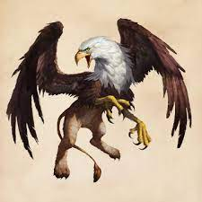
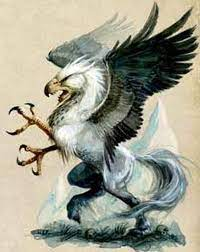
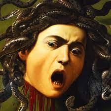

El grifo es una criatura mitológica, cuya parte frontal es la de un águila gigante, con plumas blancas, pico afilado y garras poderosas. La parte posterior es la de un león, con pelaje amarillo, patas musculosas y cola larga.
Algunos grifos se representan con orejas puntiagudas en la cabeza o plumas en la cola. De acuerdo con
los mitos, es ocho veces más grande y fuerte que un león común y no es raro que se lleve a un jinete
con su caballo, o a un par de bueyes, que entran en sus patas. Con sus garras se fabrican copas para
beber.
Tiene su origen en Oriente Próximo, pues aparece en las pinturas y esculturas de los antiguos
babilonios, asirios y persas.
También se encuentran representaciones de grifos en la pintura minoica, como en el famoso sarcófago
de Hagia Triada.
Una leyenda griega relata que el dios Apolo había ido a buscar grifos y había regresado a Grecia
cabalgando uno de ellos. Los grifos estaban consagrados a Apolo y vigilaban sus tesoros para
protegerlos de los Arimaspos. También custodiaban las cráteras de vino de Dioniso.
El grifo representa para las culturas persa e india lo que el dragón es a los chinos.
Una hipótesis moderna plantea que el origen real del grifo como criatura mitológica se encuentra en
los numerosos restos fósiles de dinosaurios pertenecientes a la familia Ceratopsidae, que se pueden
encontrar en gran número en los desiertos de Asia central, especialmente Mongolia. El hallazgo
casual de los esqueletos petrificados de estos dinosaurios, de boca en forma de pico ganchudo,
amplios huesos escapulares, cola larga y patas con pezuñas de varios dedos pudieron haber dado lugar
antiguamente a una reinterpretación de los dueños de esos esqueletos, convirtiéndolos en criaturas
mitológicas a falta de un referente real.
Para algunas culturas antiguas, el grifo tenía el poder de controlar los cuatro elementos, (cinco
para los hindúes). Según algunos relatos, arrojaban fuego por un orificio junto a su nariz y aire
helado de sus pulmones salía por su boca, e incluso se decía que al batir sus alas podían generar
maremotos y que al rugir, hacían temblar la tierra
Un hipogrifo es una criatura imaginaria híbrida, de apariencia mitad caballo y mitad grifo, que se asemeja a un caballo alado con la cabeza y los miembros anteriores de un águila. Su figura quizás provenga del bestiario fabuloso de los persas y de su simurgh, a través del grifo.
Su origen es evocado por el poeta latino Virgilio en sus Eglogas. Si alguna vez fue representado en
la Edad Antigua y bajo los merovingios, es claramente nombrado y definido por primera vez en la obra
de Ludovico Ariosto, el Orlando furioso, a inicios del siglo xvi. En este poema épico de caballería,
inscrito en la continuidad del ciclo carolingio, el hipogrifo es una montura nacida naturalmente del
apareamiento de una yegua y de un grifo, extremadamente rápido y capaz de volar alrededor del mundo,
montado por magos y por nobles héroes, como el paladín Ruggiero que liberó a la bella Angélica sobre
su lomo. Símbolo de impulsos incontrolados, el hipogrifo llevó a Astolfo hasta la luna. El éxito de
este poema permite que la figura y el nombre del hipogrifo sean retomados en otras historias del
mismo tipo.
Algunas veces representados en blasones en heráldica, el hipogrifo se convirtió en un tema
artístico, ampliamente ilustrado por Gustave Doré en el siglo xix. Al igual que muchas criaturas
legendarias, retornó en las obras modernas y, en particular, en los juegos de rol, en los
videojuegos, así como también en novelas de fantasía. La saga Harry Potter lo ha popularizado
vivamente a través del personaje de Buckbeak.
El antiguo posible origen del hipogrifo no es reconocido por unanimidad entre los especialistas
contemporáneos. De hecho, esta criatura no es nombrada, ningún mito o leyenda la incorpora (a
diferencia del grifo o del simurgh) antes de su aparición en Orlando furioso. La posición
mayoritaria entre los especialistas (entre otros, el historiador ecuestre Marc-André Wagner) es
considerar al hipogrifo como una creación de Ariosto en la continuidad del ciclo carolingio, a
inicios del siglo xvi y a fines de la Edad Media. Jorge Luis Borges cita, por ejemplo, sin
ambigüedad a Ariosto como el inventor del hipogrifo, al igual que los autores del Webster's 1828
American Dictionary9 No obstante, las representaciones artísticas próximas del hipogrifo son
atestiguadas desde la Antigüedad.
Medusa era un monstruo ctónico femenino, que convertía en piedra a aquellos que la miraban fijamente a los ojos. Fue decapitada por Perseo, quien después usó su cabeza como arma hasta que se la dio a la diosa Atenea para que la pusiera en su escudo, la égida.
Desde la antigüedad clásica griega, la imagen de la cabeza de Medusa aparece representada en el
artilugio que aleja el mal conocido como Gorgoneion. El mito pudo tener su origen en la
abolición de los cultos de la diosa Luna caria y la libia Neith en los cuales las sacerdotisas
llevaban máscaras de gorgonas.
Las tres hermanas gorgonas —Medusa, Esteno y Euríale— eran hijas de Forcis y Ceto, o a veces de
Tifón y Equidna, en ambos casos monstruos ctónicos del mundo arcaico. Esta genealogía la
comparten sus otras hermanas, las Greas, como en el Prometeo encadenado de Esquilo, quien ubica
ambas trinidades muy lejos, en la «espantosa llanura de Cistene»
Pese a su origen monstruoso, en una oda escrita en el 490 a. C. por Píndaro ya se habla de la
«Medusa de bellas mejillas». En la obra literaria, Las Metamorfosis, poema narrativo del poeta
romano Ovidio, la Medusa ctónica es reivindicada bajo la figura de una hermosa doncella, «la
celosa aspiración de muchos pretendientes» y sacerdotisa del templo de Atenea, pero cuando fue
violada por el «Señor del Mar», Poseidón, en el mismo templo, la enfurecida diosa transformó el
hermoso cabello de la joven en serpientes.